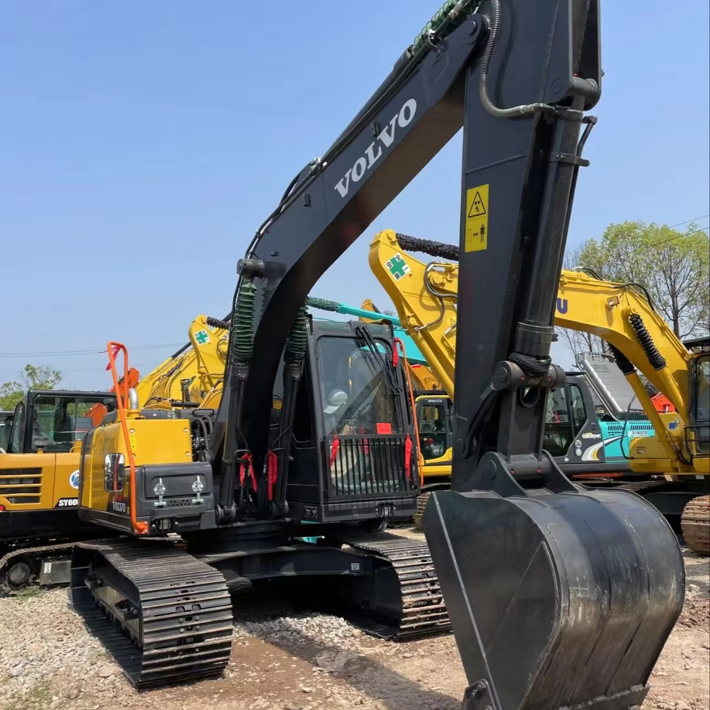

Refurbished Volvo EC200 Excavator
The Volvo EC200 is a well-regarded mid-sized hydraulic excavator that excels in a wide range of applications, including construction, landscaping, and utility work. Known for its durability, fuel efficiency, and superior operator comfort, the EC200 is a solid performer in demanding environments. For businesses looking to maximize their equipment investment, a refurbished Volvo EC200 offers a cost-effective option to get high performance without the expense of a new machine.
Honestly, it's almost impossible to buy a brand new excavator from China. They either don't exist or are made in China. If a Chinese seller tells you their Caterpillar/Komatsu/Volvo/Kobelco/Hitachi is brand new, they're lying. Therefore, a refurbished excavator is your best bet.

Here are the detailed specifications for a refurbished Volvo EC200E excavator:
Operating Weight and Dimensions
- Operating Weight: 19,800–20,500 kg
- Transport Length: ~9.7 meters
- Transport Width: ~2.8–3.0 meters
- Transport Height: ~3.0 meters
- Tail Swing Radius: ~2.9–3.1 meters
- Ground Clearance: ~440 mm
- Track Width: 600 mm standard
Engine and Powertrain
- Engine Model: Volvo D4J (Tier 4 Final compliant)
- Rated Power Output: ~131 hp (98 kW) @ 2,000 rpm
- Maximum Torque: ~600–650 Nm
- Fuel Tank Capacity: ~300–350 liters
- Travel Speed: 3.0–5.0 km/h
- Swing Speed: ~11 rpm
- Gradeability: Up to 35°
Hydraulic System
- Main Pump Type: Electro-hydraulic system with intelligent flow control
- Flow Rate: ~2 × 210–230 L/min
- System Pressure: Up to 34.3 MPa
- Hydraulic Oil Capacity: ~300 liters
- Boom/Arm/Bucket Priority: Programmable for faster cycle times
- Regeneration System: Enhances simultaneous operations and reduces cavitation
Performance Metrics
- Bucket Capacity: 0.8–1.2 m³ (SAE heaped)
- Max Digging Depth: ~6.7 meters
- Max Reach (Horizontal): ~9.9 meters
- Max Dump Height: ~6.5 meters
- Bucket Digging Force: ~130–140 kN
- Arm Digging Force: ~95–105 kN
Cab and Operator Features
- Cab Type: ROPS/FOPS certified
- Display: LCD monitor with diagnostics, fuel tracking, and work mode selector
- Controls: Electro-hydraulic joysticks with customizable sensitivity
- Comfort: Air suspension seat, climate control, low vibration cab
- Visibility: Rear-view camera, wide glass area, LED work lights
Smart Features and Efficiency
- Fuel Efficiency:
- Auto idle and engine shutdown
- ECO mode with load-sensing hydraulics
- Work mode selector: I (Idle), F (Fine), G (General), H (Heavy), P (Power Max)
- Emissions Control: Tier 4 Final (DPF + SCR + EGR)
- Telematics Ready: Volvo CareTrack system for remote diagnostics and fleet tracking
Attachments Compatibility
- Standard Bucket: 0.8–1.2 m³
- Optional Tools: Hydraulic breaker, demolition shear, compactor, ripper
- Quick Coupler: Hydraulic or manual options available
Refurbishment Scope
Refurbished EC200 units typically include:
- Engine Overhaul: Turbocharger, injectors, seals, cooling system
- Hydraulic Restoration: Pump recalibration, valve block testing, hose replacement
- Electrical Diagnostics: Monitor, sensors, wiring harness
- Cab Reconditioning: Seat, joysticks, HVAC, repainting
- Structural Repairs: Boom/bucket welding, bushing replacement, undercarriage rebuild
Overview of the Volvo EC200 Excavator
The Volvo EC200 is designed to offer a versatile balance of power, efficiency, and ease of use. Whether you need to dig, lift, grade, or perform site preparation tasks, the EC200 can handle the workload with ease. Built to last, the machine has a reputation for longevity, and with proper maintenance, it can provide years of reliable service.
Key Specifications of the Volvo EC200
-
Operating Weight: Approximately 20,000 kg (44,000 lbs)
-
Engine Power: Around 118 kW (158 hp)
-
Max Digging Depth: Up to 6.3 meters (20.7 feet)
-
Max Reach: Approximately 9.3 meters (30.5 feet)
-
Bucket Capacity: Between 0.7 to 1.1 cubic meters (24.7–38.8 cubic feet)
-
Fuel Tank Capacity: About 320 liters (84.5 gallons)
-
Travel Speed: Up to 5.6 km/h (3.5 mph)
These specifications make the EC200 a highly versatile machine, capable of taking on a range of tasks across various industries. Its performance is particularly suited for medium-duty jobs, where efficiency and power are essential.
Engine and Fuel Efficiency
The Volvo EC200 is powered by a Volvo D6D engine, known for its durability and fuel efficiency. This engine is optimized for use in demanding excavator applications, ensuring that the EC200 delivers the performance you need without consuming excessive fuel.
-
Fuel Efficiency: The EC200 is designed to maximize fuel efficiency, which is essential for projects that require prolonged use. A more fuel-efficient machine can significantly lower operational costs, making the EC200 a budget-friendly option for heavy equipment owners.
-
Powerful Engine Performance: Despite its fuel efficiency, the Volvo D6D engine still delivers ample power for digging, lifting, and other tasks. It’s engineered to handle tough conditions, providing a reliable power source for various heavy-duty applications.
-
Low Emissions: The engine meets modern emissions standards, ensuring compliance with environmental regulations and contributing to a cleaner work environment.
Hydraulics and Performance
The Volvo EC200 is equipped with a high-performance hydraulic system that allows for smooth and powerful operations, providing excellent digging, lifting, and lifting capacity.
-
Efficient Hydraulics: The EC200 is equipped with a load-sensing hydraulic system, ensuring that the hydraulic flow matches the demand of the task. This system reduces energy consumption, enhances fuel efficiency, and improves overall performance.
-
Hydraulic Power for Multiple Attachments: The hydraulic system is capable of supporting a range of attachments, from buckets and augers to breakers and grapples. This flexibility allows the EC200 to be used in a variety of applications beyond basic excavation.
-
Short Cycle Times: The hydraulic system enables the EC200 to perform tasks more quickly, reducing cycle times and improving productivity. This feature is particularly useful in projects with tight schedules.
Durability and Construction
The Volvo EC200 is designed with a heavy-duty construction that ensures it stands up to the toughest conditions on any job site. Volvo excavators are built with high-quality materials and components that provide long-lasting durability.
-
Strong Underframe and Undercarriage: The undercarriage of the EC200 is engineered for long-lasting durability, with reinforced components that can withstand the wear and tear associated with tough jobs. It is also designed to resist damage from abrasion and impact, extending the life of the machine.
-
Robust Structural Design: The frame and boom are built with high-strength steel, offering excellent protection against cracking and deformation. This robust design allows the machine to handle large loads, making it suitable for heavy-duty work.
-
Maintenance-Friendly Components: The EC200 is designed with maintenance in mind. Accessible service points make routine inspections and repairs easier, reducing downtime and increasing the overall lifespan of the machine.
Operator Comfort and Safety
Volvo places a strong emphasis on operator comfort and safety, and the EC200 is no exception. The spacious cab offers excellent visibility and a comfortable working environment, allowing operators to perform their tasks efficiently and safely.
-
Spacious, Ergonomic Cab: The cab of the EC200 is designed for comfort, with plenty of space and an ergonomic layout. Controls are intuitively placed to minimize operator fatigue during long shifts.
-
Visibility: The design of the EC200 ensures that the operator has a clear view of the work area. Large windows, a slim boom, and a low-profile engine hood all contribute to superior visibility, enhancing both safety and precision.
-
Safety Features: The EC200 includes safety features such as ROPS (Roll-Over Protective Structure), FOPS (Falling Object Protective Structure), and a stable platform, ensuring the operator is protected in the event of a rollover or falling debris. The cabin also features an effective air filtration system to ensure a clean and comfortable work environment.
Refurbished Volvo EC200: Cost-Effective Investment
Opting for a refurbished Volvo EC200 offers a number of benefits. A refurbished machine has undergone comprehensive inspections and repairs to restore it to near-new condition, providing reliable performance at a lower price point than buying a new model.
-
Lower Purchase Cost: A refurbished EC200 is typically priced much lower than a new model, offering businesses a significant cost-saving opportunity. This is particularly beneficial for contractors or equipment fleets with budget constraints.
-
Quality Assurance: Refurbished machines are thoroughly inspected by qualified technicians to ensure that all key components, including the engine, hydraulics, and undercarriage, meet the necessary standards. Any worn-out or faulty parts are replaced, ensuring the machine performs like new.
-
Warranty and Support: Many refurbished machines come with a warranty, giving buyers peace of mind. Additional support, including maintenance and parts availability, ensures that the machine will remain operational for years to come.
Maintenance Tips for the Volvo EC200
To ensure the longevity and reliability of the Volvo EC200, it's important to follow proper maintenance practices:
-
Engine Maintenance: Regularly check the engine oil levels and change the oil at the recommended intervals. Also, inspect the air and fuel filters for dirt buildup and replace them as necessary.
-
Hydraulic System Maintenance: Check the hydraulic hoses, pumps, and cylinders for leaks and cracks. Regularly change the hydraulic fluid and filters to maintain optimal hydraulic performance.
-
Track and Undercarriage Inspection: Inspect the tracks for wear and replace them when necessary. Clean the undercarriage to prevent dirt buildup, which can lead to increased wear and reduced efficiency.
-
Cab Maintenance: Keep the cab clean and ensure that safety features like the seat belt and ROPS/FOPS structures are intact. Clean the air conditioning filters regularly to ensure a comfortable environment for the operator.
Conclusion
The Volvo EC200 is a reliable, durable, and fuel-efficient excavator, ideal for medium-duty tasks in construction, landscaping, and utility projects. Its combination of powerful performance, low operating costs, and operator comfort makes it a popular choice among contractors. Purchasing a refurbished Volvo EC200 allows businesses to get a high-quality, cost-effective machine that offers excellent performance and reliability. With proper maintenance, the EC200 can provide years of dependable service, making it an excellent addition to any heavy equipment fleet.
Our Commitment
- 2 years / 4000 hours warranty.
- EPA certified.
- No sweatshop labor.
Contacts

- [email protected]
- Youtube Instagram Facebook
- Navigation: G206 (Sishu Bridge) in Changfeng County, Hefei City, Anhui Province, 200 meters north to the east